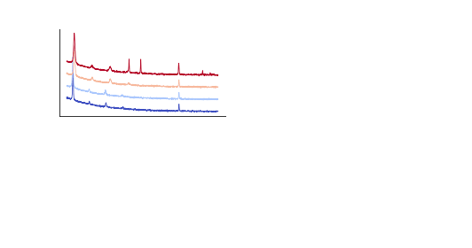

Figures
Figure builder
Multi-panel figures for papers.
Steps
Use Batch ResultsTake data from the batch results or an exported CSV.Add SectionAdd panels (a), (b), (c)...Export Figure (PNG/PDF/SVG)...Export at a journal size.
How it works

Worked example
A four-panel figure: (a) the stacked scans, (b) c against T, (c) FWHM against T, (d) TiC fraction.